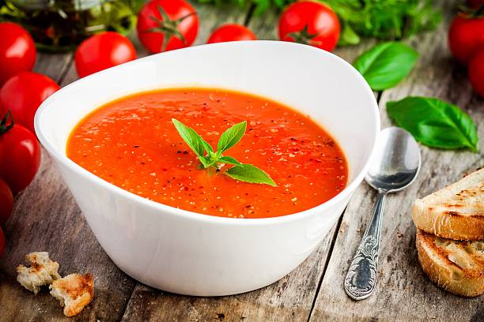

Ingrediënten voor 4 personen

1 ui
2 tenen knoflook
750 gram tomaten
750 ml water
1 groentebouillontablet
1 blikje tomatenpuree
scheutje kookroom
2 eetlepels olijfolie
verse basilicum
| Stap 1 | Doe de ui (gesnipperd) en de 2 tenen knoflook (fijngesneden) in een soeppan en zet deze op het vuur voor ongeveer 3 minuten. |
| Stap 2 | Voeg dan de tomaten toe en bak deze 5 minuten mee. |
| Stap 3 | Voeg het water en het blikje tomatenpuree eraan toe en laat het dan nog een minuten koken. |
| Stap 4 | Pureer het geheel nu met een staafmixer en laat het daarna een paar minuutjes doorkoken. |
| Stap 5 | Wanneer de soep wordt opgediend kunt u er een stukje verse basilicum opdoen. |